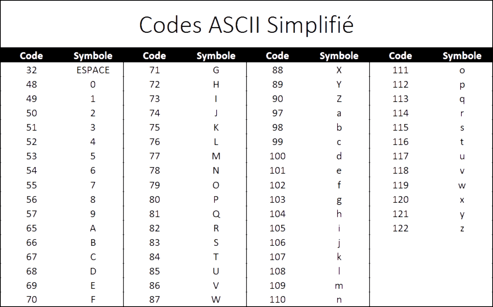

Sais-tu comment les ordinateurs communiquent avec nous?
Comme nous avons vu plus tôt, les ordinateurs transforment tout en nombres.
Alors, comment font-ils pour afficher des mots?

Utilise les flèches du clavier pour faire défiler le diaporama. N'hésite pas à poser des questions à l'animateur !
1 Lettre = 1 Nombre
L’ordinateur associe à chaque lettre de l’alphabet un nombre précis, ce qui lui permet de comprendre que tu écris des mots.
Il existe différents codes qui permettent aux ordinateurs d’associer des nombres aux lettres.
En Amérique, celui qui est le plus utilisé se nomme le code ASCII.
Voici à quoi ressemble le code ASCII
|
Quand tu écris « BONJOUR » L’ordinateur comprend :
|
|
Quand tu veux faire une phrase, il y a même un code pour faire un espace entre tes mots 32 = ESPACE |
Fin :)
| 65 | 32 | 84 | 79 | 73 | 32 | 68 | 69 | 32 | 74 | 79 | 85 | 69 | 82 |
| A | T | O | I | D | E | J | O | U | E | R |

Clique sur le bouton SUIVANT en haut pour continuer